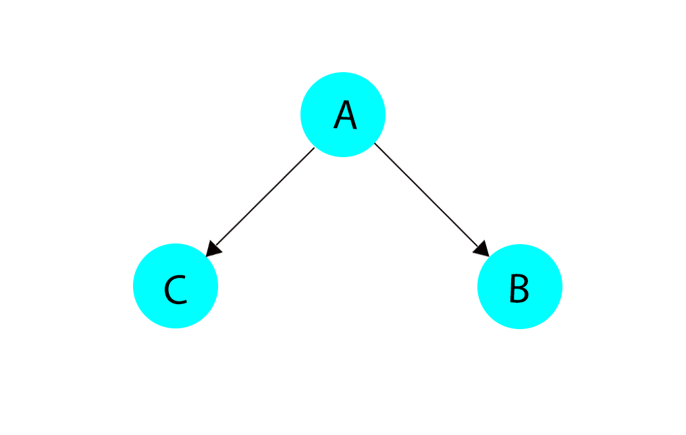
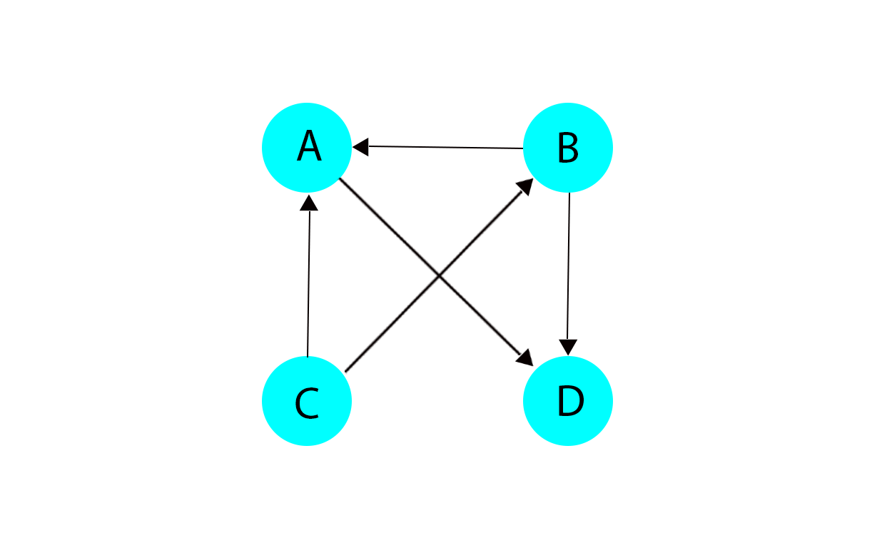

平时候接触到的只是业务逻辑层面的使用，很少触及到算法方面的应用，在看rails应用的启动过程时，偶然间发现的一个算法应用，然后查看了相关的资料，总结下TSort算法在Rails中的应用。
TSort的理解
TSort的意思: TSort是拓扑排序英文的缩写，拓扑排序是有向图按其线性排列的一种算法，有个先后的排序顺序，而且不能有环出现，如果有环出现，则不算是拓扑结构了。一般拓扑结构可以用来表示元素的一些依赖关系的处理，如果事物A需要在事物B之前处理，则是B依赖于A的执行，B要先处理，用箭头表示为 A -> B。
TSort的使用:
-
TSort.tsort_each(each_node, each_child)each_node和each_child是两个block，同时这两个block接收在TSort中定义的block1和block2作为参数传递进去(block1和block2其实是对应到each_node.call和each_child.call后面的块的)，逐个作用在各个节点和子节点上。意思是让用户自己定义传入进来的节点和子节点是什么。这些节点都作为这两个block的参数使用。 - each_node(&block) 定义这个方法是因为在拓扑结构中的点可能是对象，或是数字，或是一些字母类的东西，但是点和点间产生关联需要有关联因子，关联因子可能是一个数字，一个字符串，或是一个object。each_node这个block就是取出关联因子，然后逐个作为参数去调用block1就可以了。
-
each_child(&block) 这个方法的目的和each_node差不多，但是这个方法的作用因子是对应的子节点，如下图：  其中A是作为block1的参数调用，B和C是作为block2的参数调用。
- 第二种用法是让成员的集合去覆写
tsort_each_node和tsort_each_child这两个方法，这两个方法的作用和上面的each_nodeheeach_child的作用一样，只是调用tsort_each的对象不一样，这种方式是通过include 'tsort'模块，然后用成员集合去调用tsort_each方法的。
使用例子：
如下图的关系，需要按照依赖关系逐个输出节点。  这个例子中可以用如下关系表示A, B, C, D节点
A = B + C
B = C + 2
C = 2
D = B + A + 1
要求出这些未知数，应该先求解出这些数的顺序。
这些数可以用两种数据结构表示关系，一个是直接hash，另外一个有可能这些依赖关系只是对象的一个属性而已，这就是为什么需要自定义 each_node 和 each_child 的原因。
- 用hash表示节点关系求解如下:
graph = { A: [:D], B: [:A, :D], C: [:A, :B], D: [] }
each_node = lambda {|&b| graph.each_key(&b) }
each_child = lambda { |n, &b| graph[n].each(&b) }
TSort.tsort_each(each_node, each_child) {|scc|
p scc
}
# puts:
# :D
# :A
# :B
# :C
- 用对象的关联表示节点关系求解如下:
class NodeObj
attr_reader :node, :children
def initialize(node, children)
@node =node
@children = children
end
end
class TSortTest
include TSort
def initialize(node_objs)
@node_objs = node_objs
end
def tsort_each_node(&block)
@node_objs.map(&:node).each(&block)
end
def tsort_each_child(node, &block)
@node_objs.select do |node_obj|
node_obj.children.include? node
end.map(&:node).each(&block)
end
end
node_objs = []
node_objs.push NodeObj.new('C','2')
node_objs.push NodeObj.new('D','B + A + 1')
node_objs.push NodeObj.new('A','B + C')
node_objs.push NodeObj.new('B','C + 2')
tsort_test = TSortTest.new(node_objs)
tsort_test.tsort_each do |node|
p node
end
# puts:
# :D
# :A
# :B
# :C
上面是根据图的不同数据结构的表示方法而产生的两种使用TSort的方式，都是一样的调用，只不过include ‘tsort’那种方式是用的直接定义两个方法的方式去用，而 TSort.tsort_each 是把块作为参数传递进去。在Rails执行初始化的依赖中使用的是后一种方式。
在rails中的应用
# /Users/Cain/.rvm/gems/ruby-2.5.3/gems/railties-5.2.1.1/lib/rails/initializable.rb
class Collection < Array
include TSort
alias :tsort_each_node :each
def tsort_each_child(initializer, &block)
select { |i| i.before == initializer.name || i.name == initializer.after }.each(&block)
end
def +(other)
Collection.new(to_a + other.to_a)
end
end
上面定义了一个继承Array的类，这个类里定义了需要覆盖的两个方法，其中 tsort_each_node 用 Array中的each 这个方法表示集合中的成员就表示一个节点，而 tsort_each_child 方法求得的关联孩子节点需要通过其它Raitie中定义的 initializer before 和 after这两个option去取得联系，从而用那些子节点作为参数在block中执行。
TSort源码解析
TSort使用的基本算法
TSort是基于Tarjan算法来进行排序的，在这里不详细介绍Tarjan排序算法，具体可以参考Tarjan算法寻找有向图的强连通分量，这里只讲解Tarjan算法如何在拓扑排序中使用。
-
Tarjan是用来查找强连通分量的，而一个节点的强连通分量是多个节点组成强连通分量的特殊情况，所以TSort中如果算法中找到有多个节点的强连通分量时就会抛出
Cyclic这个错误，表示存在环图，不符合拓扑结构。而只有一个节点的强连通分量根据进入栈中后进先出的规则，可以做到按依赖排序的先后顺序出来。 -
该算法是会有三个数据结构，一个是dnf数组，初始化时按照访问节点顺序加1，用来存储访问节点的顺序的，其中的值表示节点的位置。另外一个是low数组，初始值和dnf中的值一样，这个数组是用来存储子节点不通过父节点访问到的祖父节点的最小时间戳是多少，这里的时间戳可以理解为low中的数值。
-
在算法中判断该节点是不是强连通分量，是不是应该出栈是通过判断dnf和low对应的节点是否一样来判断的，如果一样了，表示这个节点不能回到祖先节点，说明该节点不在一个多节点的强连通分量重，则这个节点是单独的一个强连通分量，如果不相等，说明这个节点可以回到祖先节点，那这个节点肯定在多个节点的强连通分量上，这是就不满足拓扑结构了。下面介绍的实现 TSort的就是通过这种方式去实现的。
TSort 源码解析
def TSort.tsort_each(each_node, each_child) # :yields: node
return to_enum(__method__, each_node, each_child) unless block_given?
TSort.each_strongly_connected_component(each_node, each_child) {|component|
if component.size == 1 # 判断强连通分量是否有多个节点，如果有多个则不满足拓扑结构
yield component.first
else
raise Cyclic.new("topological sort failed: #{component.inspect}")
end
}
end
这里的调用 each_strongly_connected_component 方法加的block就是为了判断强连通分量中的节点是否满足只有一个的情况，如果有多个就不满足拓扑图了，会抛出错误。
求各个节点的最强连通分量
def TSort.each_strongly_connected_component(each_node, each_child) # :yields: nodes
return to_enum(__method__, each_node, each_child) unless block_given?
id_map = {} # 表示点的位置，为了避免重复调用节点去求强连通分量
stack = []
each_node.call {|node|
unless id_map.include? node # 如果已经存在那个节点，表示节点的关联关系已经被求过了，不需要进一步求了
TSort.each_strongly_connected_component_from(node, each_child, id_map, stack) {|c|
yield c
}
end
}
nil
end
这个方法主要是把每个节点作为block的参数去调用，由于一个拓扑图是有前有后的，说明肯定有根节点存在，但是在表示的映射的数据对结构中，不能确保第一次用的节点就是根节点，也有可能是最后个节点，所以需要遍历这些节点去求到他们的强连通图。
求节点的最强连通分量
def TSort.each_strongly_connected_component_from(node, each_child, id_map={}, stack=[]) # :yields: nodes
return to_enum(__method__, node, each_child, id_map, stack) unless block_given?
minimum_id = node_id = id_map[node] = id_map.size # node_id 是元素的位置，minimum_id 是low数组中对应的值
stack_length = stack.length
stack << node
each_child.call(node) {|child|
if id_map.include? child # 表示遇到已经访问过的节点
child_id = id_map[child]
minimum_id = child_id if child_id && child_id < minimum_id # child_id 不为空表示没有出栈且没有被置为nil
else # 这是遍历子节点
sub_minimum_id =
TSort.each_strongly_connected_component_from(child, each_child, id_map, stack) {|c|
yield c
}
minimum_id = sub_minimum_id if sub_minimum_id < minimum_id
end
}
if node_id == minimum_id # 如果这两个值相等，表示栈里的数据都是一个强连通分量，则把栈里的数据都退出来，这些都是一个强连通分量来的。
component = stack.slice!(stack_length .. -1)
component.each {|n| id_map[n] = nil}
yield component
end
minimum_id
end
拓扑排序的实现主要是这个方法，用了递归去遍历各个节点，然后逐个加上标识，然后判断是否满足退栈的条件，如果dnf和low中对应的值不相等，说明栈里的点是在一个环里，然后一直回退，直到遇到两个值相等的点，两个值相等的点是环中的根节点，这时就把栈里的数值按顺序退出去就行了。退出的这些数值就是一个强连通分量。如有这种关系的图 graph = { B: [:A], A: [:D], C: [:B], D: [:C] } 这其实是一个环状图，从点B开始作为node执行each_child后面的block，递归到C点，这时回到B，B是已经访问过的节点，说明是C的祖先节点或有共同的祖先的节点，由于B节点的low值不为nil，而且小于C，所以C的low值会变。一直会退到先前的B节点，这时B点的dnf和low值相等，所以是根节点，这时栈里的多个节点是一个强连通分量，这时就不满足拓扑结构了，就会抛出错误。